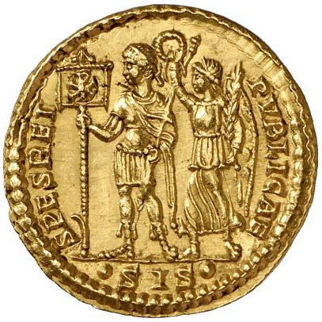

Eusebius:
The
Conversion of Constantine from the Life of Constantine
Eusebius was
a Christian
bishop of Caesarea, in Asia Minor, who wrote a biography of his friend,
the
emperor Constantine (305-337), shortly after Constantine's
death, praising him
for his reign as a Christian emperor.
These selections present the story of Constantine's
conversion to
Christianity, taken from Book 1 of his biography.
25. As soon then as he was established on the throne, he began to care for the interests of his paternal inheritance, and visited with much considerate kindness all those provinces which had previously been under his father's government. Some tribes of the barbarians who dwelt on the banks of the Rhine, and the shores of the Western ocean, having ventured to revolt, he reduced them all to obedience, and brought them from their savage state to one of gentleness. He contented himself with checking the inroads of others, and drove from his dominions, like untamed and savage beasts, those whom he perceived to be altogether incapable of the settled order of civilized life. Having disposed of these affairs to his satisfaction, he directed his attention to other quarters of the world, and first passed over to the British nations, which lie in the very bosom of the ocean. These he reduced to submission, and then proceeded to consider the state of the remaining portions of the empire, that he might be ready to tender his aid wherever circumstances might require it.
26. While, therefore, he regarded the entire world as one immense body, and perceived that the head of it all, the royal city of the Roman empire, was bowed down by the weight of a tyrannous oppression; at first he had left the task of liberation to those who governed the other divisions of the empire, as being his superiors in point of age. But when none of these proved able to afford relief, and those who had attempted it had experienced a disastrous termination of their enterprise, he said that life was without enjoyment to him as long as he saw the imperial city thus afflicted, and prepared himself for the overthrowal of the tyranny.
27. Being convinced, however, that he needed some more powerful aid than his military forces could afford him, on account of the wicked and magical enchantments which were so diligently practiced by the tyrant, he [Constantine] sought Divine assistance, deeming the possession of arms and a numerous soldiery of secondary importance, but believing the co-operating power of Deity invincible and not to be shaken. He considered, therefore, on what God he might rely for protection and assistance.
While engaged in this enquiry, the thought occurred to him, that, of the many emperors who had preceded him, those who had rested their hopes in a multitude of gods, and served them with sacrifices and offerings, had in the first place been deceived by flattering predictions, and oracles which promised them all prosperity, and at last had met with an unhappy end, while not one of their gods had stood by to warn them of the impending wrath of heaven. While one alone who had pursued an entirely opposite course, who had condemned their error, and honored the one Supreme God during his whole life, had found him to be the Saviour and Protector of his empire, and the Giver of every good thing.
Reflecting on this, and well weighing the fact that they who had trusted in many gods had also fallen by manifold forms of death, without leaving behind them either family or offspring, stock, name, or memorial among men: while the God of his father had given to him, on the other hand, manifestations of his power and very many tokens: and considering farther that those who had already taken arms against the tyrant, and had marched to the battle-field under the protection of a multitude of gods, had met with a dishonorable end (for one of them [Galerius] had shamefully retreated from the contest without a blow, and the other [Severus], being slain in the midst of his own troops, became, as it were, the mere sport of death; reviewing, I say, all these considerations, he judged it to be folly indeed to join in the idle worship of those who were no gods, and, after such convincing evidence, to err from the truth; and therefore felt it incumbent on him to honor his father's God alone.
28. Accordingly, he called on him with earnest prayer and supplications that he would reveal to him who he was, and stretch forth his right hand to help him in his present difficulties. And while he was thus praying with fervent entreaty, a most marvelous sign appeared to him from heaven, the account of which it might have been hard to believe had it been related by any other person. But since the victorious emperor himself long afterwards declared it to the writer of this history, when he was honored with his acquaintance and society, and confirmed his statement by an oath, who could hesitate to accredit the relation, especially since the testimony of after-time has established its truth?
He said that about noon, when the day was already beginning to decline, he saw with his own eyes the trophy of a cross of light in the heavens, above the sun, and bearing the inscription, CONQUER BY THIS. At this sight he himself was struck with amazement, and his whole army also, which followed him on this expedition, and witnessed the miracle.
29. He said, moreover, that he doubted within himself what the import of this apparition could be. And while he continued to ponder and reason on its meaning, night suddenly came on; then in his sleep the Christ of God appeared to him with the same sign which he had seen in the heavens, and commanded him to make a likeness of that sign which he had seen in the heavens, and to use it as a safeguard in all engagements with his enemies.
30. At dawn of day he arose, and communicated the marvel to his friends: and then, calling together the workers in gold and precious stones, he sat in the midst of them, and described to them the figure of the sign he had seen, bidding them represent it in gold and precious stones. And this representation I myself have had an opportunity of seeing.
 Coin of the
emperor
Constans, showing the emperor holding the labarum and
being
crowned by a female personification of victory; the
Latin
inscription says "Hope of the Republic" | 31. Now it was made in the following manner. A long spear, overlaid with gold, formed the figure of the cross by means of a transverse bar laid over it. On the top of the whole was fixed a wreath of gold and precious stones; and within this, the symbol of the Saviour's name, two letters indicating the name of Christ by means of its initial characters, the letter P being intersected by X in its centre: and these letters the emperor was in the habit of wearing on his helmet at a later period. From the cross-bar of the spear was suspended a cloth, a royal piece, covered with a profuse embroidery of most brilliant precious stones; and which, being also richly interlaced with gold, presented an indescribable degree of beauty to the beholder. This banner was of a square form, and the upright staff, whose lower section was of great length, bore a golden half-length portrait of the pious emperor and his children on its upper part, beneath the trophy of the cross, and immediately above the embroidered banner. |
The emperor constantly made use of this sign of
salvation as
a safeguard against every adverse and hostile power, and commanded that
others
similar to it should be carried at the head of all his armies.
32. These things were done shortly afterwards. But at the time above specified, being struck with amazement at the extraordinary vision, and resolving to worship no other God save Him who had appeared to him, he sent for those who were acquainted with the mysteries of His doctrines, and enquired who that God was, and what was intended by the sign of the vision he had seen. They affirmed that He was God, the only begotten Son of the one and only God: that the sign which had appeared was the symbol of immortality, and the trophy of that victory over death which He had gained in time past when sojourning on earth. They taught him also the causes of His advent, and explained to him the true account of His incarnation. Thus he was instructed in these matters, and was impressed with wonder at the divine manifestation which had been presented to his sight. Comparing, therefore, the heavenly vision with the interpretation given, he found his judgment confirmed; and, in the persuasion that the knowledge of these things had been imparted to him by Divine teaching, he determined thenceforth to devote himself to the reading of the Inspired writings.
Moreover, he made the priests of God his
counselors, and
deemed it incumbent on him to honor the God who had appeared to him
with all
devotion. And after this, being fortified by well-grounded hopes in
Him, he
hastened to quench the threatening fire of tyranny.
.
.
.
35. All men, therefore, both people and magistrates, whether of
high or low degree, trembled through fear of him [Maxentius] whose
daring wickedness was such as I have described, and were oppressed by
his grievous tyranny. Nay, though they submitted quietly, and endured
this bitter servitude, still there was no escape from the tyrant’s
sanguinary cruelty. For at one time, on some trifling pretense, he
exposed the populace to be slaughtered by his own body-guard; and
countless multitudes of the Roman people were slain in the very midst
of the city by the lances and weapons, not of Scythians or barbarians,
but of their own fellow-citizens. And besides this, it is impossible to
calculate the number of senators whose blood was shed with a view to
the seizure of their respective estates, for at different times and on
various fictitious charges, multitudes of them suffered death.
36. But the crowning point of the tyrant’s
[Maxentius'] wickedness was his having recourse to sorcery: sometimes
for magic purposes ripping up women with child, at other times
searching into the bowels of new-born infants. He slew lions
also, and practiced certain horrid arts for evoking demons, and
averting the approaching war, hoping by these means to get the
victory. In short, it is impossible to describe the manifold acts
of oppression by which this tyrant of Rome enslaved his subjects: so
that by this time they were reduced to the most extreme penury and want
of necessary food, a scarcity such as our contemporaries do not
remember ever before to have existed at Rome.
37. Constantine, however, filled with compassion on account of
all these miseries, began to arm himself with all warlike preparation
against the tyranny. Assuming therefore the Supreme God as his patron,
and invoking His Christ to be his preserver and aid, and setting the
victorious trophy, the salutary symbol, in front of his soldiers and
body-guard, he marched with his whole forces, trying to obtain again
for the Romans the freedom they had inherited from their
ancestors. And whereas, Maxentius, trusting more in his magic
arts than in the affection of his subjects, dared not even advance
outside the city gates, but had guarded every place and district and
city subject to his tyranny, with large bodies of soldiers, the
emperor, confiding in the help of God, advanced against the first and
second and third divisions of the tyrant’s forces, defeated them all
with ease at the first assault, and made his way into the very interior
of Italy.
38. And already he was approaching very near
Rome itself, when, to save him from the necessity of fighting with all
the Romans for the tyrant’s sake, God himself drew the tyrant, as it
were by secret cords, a long way outside the gates. And now those
miracles recorded in Holy Writ, which God of old wrought against the
ungodly (discredited by most as fables, yet believed by the faithful),
did he in every deed confirm to all alike, believers and unbelievers,
who were eye-witnesses of the wonders. For as once in the days of Moses
and the Hebrew nation, who were worshipers of God, "Pharaoh's chariots
and his host hath he cast into the sea and his chosen chariot-captains
are drowned in the Red Sea,"-- so at this time Maxentius, and the
soldiers and guards with him, "went down into the depths like stone,"
when, in his flight before the divinely-aided forces of Constantine, he
essayed to cross the river which lay in his way, over which, making a
strong bridge of boats, he had framed an engine of destruction, really
against himself, but in the hope of ensnaring thereby him who was
beloved by God. For his God stood by the one to protect him,
while the other, godless, proved to be the miserable contriver of these
secret devices to his own ruin. So that one might well say, "He hath
made a pit, and digged it, and is fallen into the ditch which he made.
His mischief shall return upon his own head, and his violence shall
come down upon his own head." (Psal. 7. 15, 16) Thus, in the
present instance, under divine direction, the machine erected on the
bridge, with the ambuscade concealed therein, giving way unexpectedly
before the appointed time, the bridge began to sink, and the boats with
the men in them went bodily to the bottom. And first the wretch
himself, then his armed attendants and guards, even as the sacred
oracles had before described, "sank as lead in the mighty waters" (Ex.
xv. 10). S o that they who thus obtained victory from God might well,
if not in the same words, yet in fact in the same spirit as the people
of his great servant Moses, sing and speak as they did concerning the
impious tyrant of old: "Let us sing unto the Lord, for he hath been
glorified exceedingly: the horse and his rider hath he thrown into the
sea. He is become my helper and my shield unto salvation." And again,
"Who is like unto thee, O Lord, among the gods? who is like thee,
glorious in holiness, marvelous in praises, doing wonders?"
(Exod. 15. 1, 2, 11).
39. Having then at this time sung these and suchlike praises to
God, the Ruler of all and the Author of victory, after the example of
his great servant Moses, Constantine entered the imperial city in
triumph. And here the whole body of the senate, and others of
rank and distinction in the city, freed as it were from the restraint
of a prison, along with the whole Roman populace, their countenances
expressive of the gladness of their hearts, received him with
acclamations and abounding joy; men, women, and children, with
countless multitudes of servants, greeting him as deliverer, preserver,
and benefactor, with incessant shouts. But he, being possessed of
inward piety toward God, was neither rendered arrogant by these
plaudits, nor uplifted by the praises he heard: but, being sensible
that he had received help from God, he immediately rendered a
thanksgiving to him as the Author of his victory.
40. Moreover, by loud proclamation and
monumental inscriptions he made known to all men the salutary symbol,
setting up this great trophy of victory over his enemies in the midst
of the imperial city, and expressly causing it to be engraven in
indelible characters, that the salutary symbol was the safeguard of the
Roman government and of the entire empire. Accordingly, he immediately
ordered a lofty spear in the figure of a cross to be placed beneath the
hand of a statue representing himself, in the most frequented part of
Rome, and the following inscription to be engraved on it in the Latin
language: "by virtue of this salutary sign, which is the true
test of valor, I have preserved and liberated your city from the yoke
of tyranny. I have also set at liberty the Roman senate and people, and
restored them to their ancient distinction and splendor."
41. Thus the pious emperor, glorying in the confession of the victorious cross, proclaimed the Son of God to the Romans with great boldness of testimony. And the inhabitants of the city, one and all, senate and people, reviving, as it were, from the pressure of a bitter and tyrannical domination, seemed to enjoy purer rays of light, and to be born again into a fresh and new life. All the nations, too, as far as the limit of the western ocean, being set free from the calamities which had heretofore beset them, and gladdened by joyous festivals, ceased not to praise him as the victorious, the pious, the common benefactor: all, indeed, with one voice and one mouth, declared that Constantine had appeared by the grace of God as a general blessing to mankind. The imperial edict also was everywhere published, whereby those who had been wrongfully deprived of their estates were permitted again to enjoy their own, while those who had unjustly suffered exile were recalled to their homes. Moreover, he freed from imprisonment, and from every kind of danger and fear, those who, by reason of the tyrant's cruelty, had been subject to these sufferings.
* * * * * * * * * * * *
From
https://sourcebooks.fordham.edu/basis/vita-constantine.asp; which cites as
its
source:
From Volume I, Nicene and Post-Nicene Fathers, 2nd Series, ed. P. Schaff and H. Wace, (Edinburgh: repr. Grand Rapids MI: Wm. B. Eerdmans, 1955) the digital version is by The Electronic Bible Society, P.O. Box 701356, Dallas, TX 75370, 214-407-WORD.